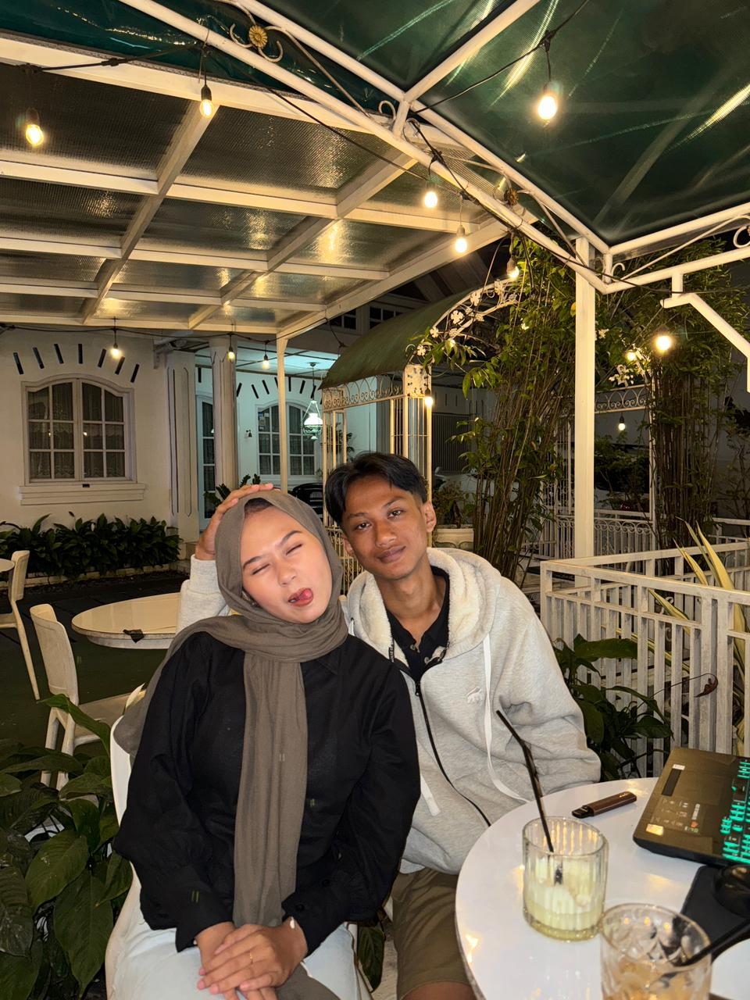

Hi Sayangkuuu <3, dibaca sampai selesai ya sayanggg
Hi sayang, gimana kabar kamuu? semoga senantiasa diberikan kesehatan ya, oiya aku cuman mau bilang kalo aku itu sayang banget sama kamu, bahkan mungkin lebih dari yang bisa aku ungkapin. Oiya hari ini hari kan hari spesialnya kamu ya? ulang tahun kamu ya seng? Happy Birthday yaa sayangkuuuu, semoga kamu selalu dilimpahkan rezeky yang banyak, selalu senantiasa sehat selalu, semoga semua doa baikmu bisa dikabulkan yaaa, dan semoga dibeberapa tahun kedepan kamu jadi istri sah akuuu ya ehhhhh mwehehe aamiin-in dulu donggg senggg wleee, oiya sengg seperti yang udah aku janjiin ke kamu kalo aku gabakalan ninggalin kamu dalam keadaan apapun itu dan aku ingin menepati janji itu snegg ke kamu, kamu maukan bantuin aku buat nepatin janji itu? aku tau kok sengg kalo aku itu gak sempurna bahkan jauh dari kata sempurna, tapiiii aku bakalan selalu ngusahain jadi seseorang yang bisa kamu andalkan, aku pengen jadi sosok laki laki yang menjadi garda terdepan kamu. Kalau kamu capek dan butuh tempat untuk cerita, atau bahkan cuma pengen didengar aku bakalan selalu ada disini buat kamu. Maaf ya sayang kalo aku kadang suka nyebelin. oiya kamu tau gak sengg? kalau kamu itu rumah bagi aku, tempat dimana aku selalu ingin pulang, apapun yang terjadi aku mau kita sama sama saling berjuang bareng sampai semua baik baik aja. I Love You SO Much, and im thankful every day that youre mine. Sengg kamu mau gak kalo kita baikan lagi, kita sama sama lagi, kita bareng bareng lagi, kita balikan lagi? aku minta maaf atas semua kesalahan aku, aku pengen belajar lebih banyak lagi tentang diri kamu, aku pengen kamu jadi wanita terakhir aku didalam hidup aku, dan aku mau jadi laki laki terbaik yang pernah kamu temui dihidup kamu..., semoga kamu mau yaaaa untuk nerima aku kembali:)
🌹
mini mission buat Nora
Mau gak jadi My Beautiful girl-ku lagi?
🌹
FINAL CHECK
Coba di klik dulu icon dibawahnya supaya makin sahhh hehe
Jawaban Intan masuk ruang pemeriksaan. Kalau cahayanya selesai, sertifikatnya langsung keluar.
💖
TAP TO SCAN
hasil scan: valid
Sertifikat Jadi Kita

Dengan ini kita resmi jadi pasangan kembali. Masing-masing dari kita janji akan setia dan tidak akan ada yang mengingkari, kita janji dihari ini untuk tidak akan ada perpisahan kita janji tidak akan pisah apapun alasanya dan gimanapun masalahnya, kita bakalan sama sama belajar bareng kita akan berkembang bareng dan kita akan menikah dimasa depan nanti.Ridho janji akan selalu berusaha bikin hari-hari Intan terasa bahagia.
From Ridho, To Intan. Simpan baik-baik ya sayangg.
Screenshot ini ya sengg, terus kirim ke Ridho.
Untuk Kesayanganku
I Love You, Intan Nurul Inshani! 💐
Terima kasih sudah mau jadi bagian dari ceritaku. Semoga perjalanan kita ke depan dipenuhi banyak tawa dan bahagia ya! 🤍